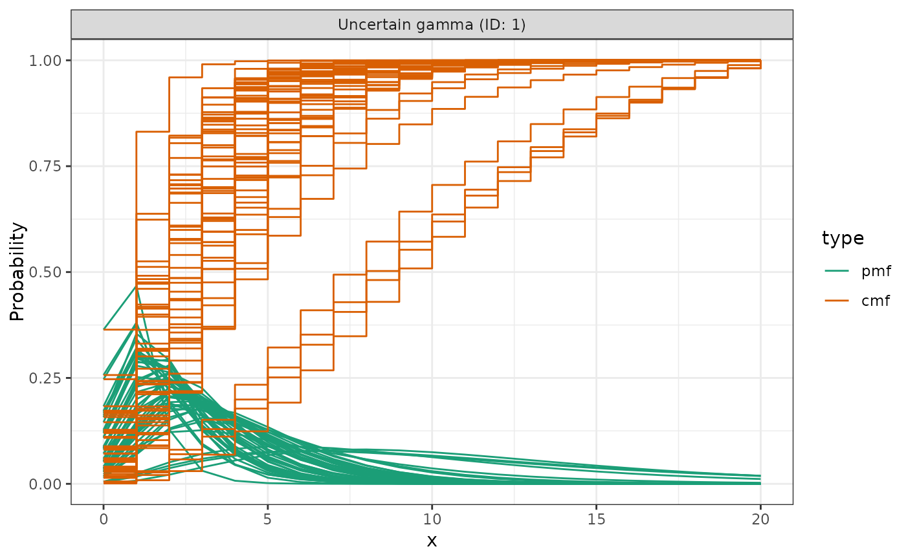
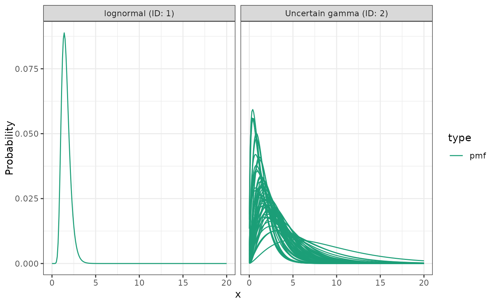
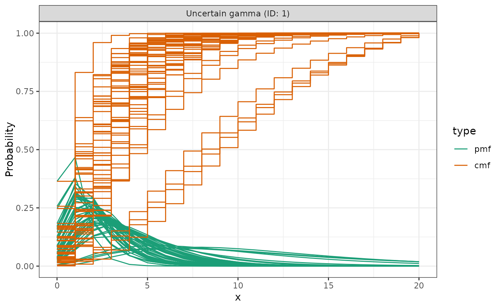
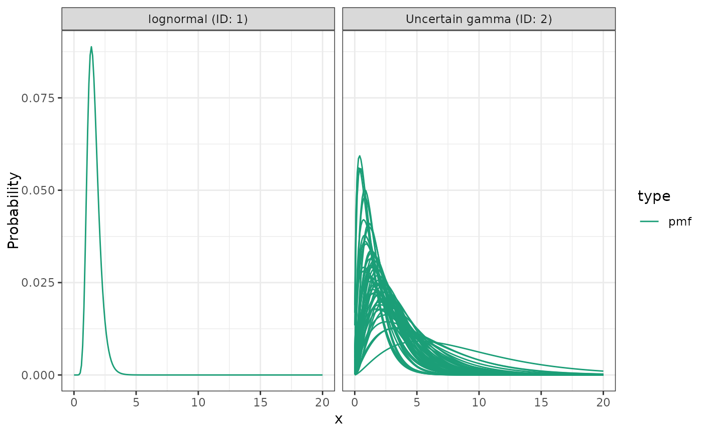

![[Experimental]](figures/lifecycle-experimental.svg) This function takes a
This function takes a <dist_spec> object and plots its probability mass
function (PMF) and cumulative distribution function (CDF) using {ggplot2}.
Usage
# S3 method for class 'dist_spec'
plot(x, samples = 50L, res = 1, cumulative = TRUE, ...)Arguments
- x
A
<dist_spec>object- samples
Integer; Number of samples to generate for distributions with uncertain parameters (default: 50).
- res
Numeric; Resolution of the PMF and CDF (default: 1, i.e. integer discretisation).
- cumulative
Logical; whether to plot the cumulative distribution in addition to the probability mass function
- ...
ignored
Examples
# A fixed lognormal distribution with mean 5 and sd 1.
dist1 <- LogNormal(mean = 1.6, sd = 0.5, max = 20)
# Plot discretised distribution with 1 day discretisation window
plot(dist1)
 # Plot discretised distribution with 0.01 day discretisation window
plot(dist1, res = 0.01, cumulative = FALSE)
# Plot discretised distribution with 0.01 day discretisation window
plot(dist1, res = 0.01, cumulative = FALSE)
 # An uncertain gamma distribution with shape and rate normally distributed
# as Normal(3, 0.5) and Normal(2, 0.5) respectively
dist2 <- Gamma(
shape = Normal(3, 0.5),
rate = Normal(2, 0.5),
max = 20
)
plot(dist2)

# Multiple distributions with 0.1 discretisation window and do not plot the
# cumulative distribution
plot(dist1 + dist2, res = 0.1, cumulative = FALSE)

# An uncertain gamma distribution with shape and rate normally distributed
# as Normal(3, 0.5) and Normal(2, 0.5) respectively
dist2 <- Gamma(
shape = Normal(3, 0.5),
rate = Normal(2, 0.5),
max = 20
)
plot(dist2)

# Multiple distributions with 0.1 discretisation window and do not plot the
# cumulative distribution
plot(dist1 + dist2, res = 0.1, cumulative = FALSE)
